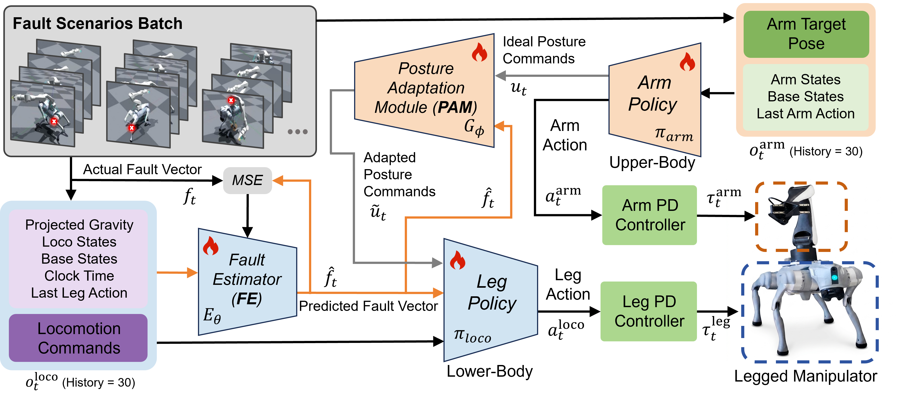

Legged manipulators combine the mobility of quadruped platforms with the manipulation capability of robotic arms. However, arm-induced center-of-mass shifts and dynamic disturbances make the whole system more vulnerable to actuator failures, which can cause falls, object drops, and task failures.
We propose FT-WBC, a fault-tolerant loco-manipulation framework for robust whole-body control under lower-limb actuator failures. FT-WBC adopts a decoupled upper- and lower-body policy architecture and introduces two key modules: a Fault Estimator (FE), which predicts faulty joints from proprioceptive histories, and a Posture Adaptation Module (PAM), which converts manipulation-driven base posture plans into safe and executable posture commands.
Through fault-aware posture adaptation, FT-WBC synthesizes compensatory gaits, preserves as much arm workspace as possible, and maintains whole-body stability. Simulation and real-world experiments on a Unitree Go2 with an Airbot Play arm show improved survival rate and reachable workspace under weakening and locked failures, with zero-shot transfer to the real robot.

FT-WBC adopts a decoupled architecture consisting of a lower-body leg policy and an upper-body arm policy. The leg policy generates quadruped joint actions from target motion commands and the predicted fault vector, while the arm policy tracks the target end-effector pose and outputs both arm joint actions and a desired base posture plan. The FE predicts joint fault conditions, and the PAM remaps the desired base posture plan into a safe posture command, enabling fault-aware whole-body control under actuator failures.
FL Hip
FL Calf
FR Thigh
RL Thigh
RR Hip
RR Calf
FL Hip
FL Calf
FR Thigh
RL Thigh
RR Hip
RR Calf
FL Hip (side view)
FL Thigh (side view)
RL Calf (side view)
FL Hip (front view)
FL Thigh (front view)
RL Calf (front view)
FL Hip
FR Thigh
FL Calf
RR Hip
RL THIGH
RR Calf
FL Hip
FL Calf
FR Thigh
RL Thigh
RR Hip
RR Calf
RL Hip （front view）
RL Thigh （front view）
FL Calf （front view）
RL Hip （side view）
RL Thigh （side view）
FL Calf （side view）
@inproceedings{anonymous2026ftwbc,
title = {FT-WBC: Learning Fault-Tolerant Whole-Body Control for Legged Loco-Manipulation},
author = {Yudong Zhong and Pengfei MAI and Sikai Guo and Jiahang Cao and Zhihai Bi and Qiuyue LIU and Ziyan Feng and JINNI ZHOU and Jun Ma},
booktitle = {Conference on Robot Learning},
year = {2026},
}